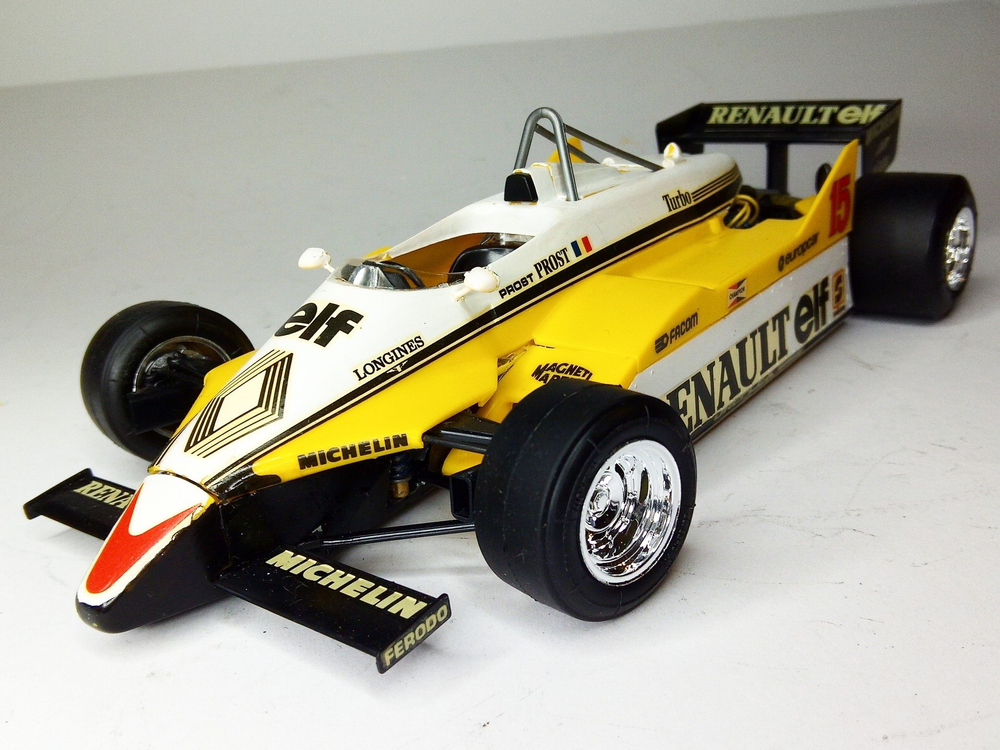
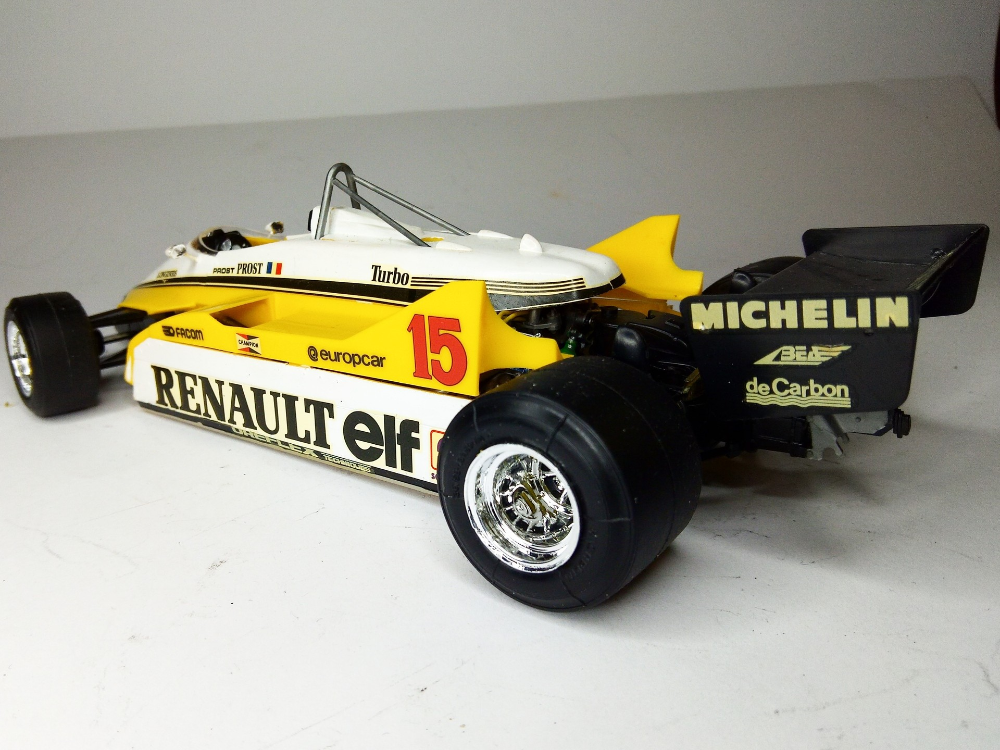

Auto e veicoli stradali · scale model archive
Renault RE30 F1
Renault RE30 F1 — Kit: Tamiya, Scale: 1/20. Raced in 1982 F1 season Renault F1 Team 15 (Alain Prost) Juli 1982 French Grand Prix - Circuit Paul Ricard Le…

Photo gallery

English description
Raced in 1982 F1 season Renault F1 Team 15 (Alain Prost) Juli 1982 French Grand Prix - Circuit Paul Ricard Le Castellet, Var (Result: 2)
#1/20 #Tamiya #Renault #RE30
Descrizione italiana
Corse nella stagione di Formula 1 1982: Renault F1 Team 15, Alain Prost, luglio 1982, GP di Francia, Circuit Paul Ricard, Le Castellet. Risultato: 2°.